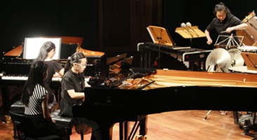
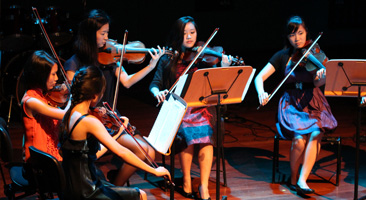

Affiliated CCAs


Piano Ensemble:
Formed in 2006, the NJC Piano Ensemble is under the guidance of 3 coaches, Mr. Seow Aik Keong, Ms. Denise Lee, and Mr. Lim Yan, a professional who has performed extensively with the SSO. Since their debut in 2007, the ensemble been actively participating in a vast array of competitions, school concerts and external concerts both in Singapore and also overseas. The ensemble’s annual concert, PianoWorks, held at the Esplanade Recital Studio, never fails to capture the hearts of the audience. Additionally, the ensemble frequently performs their duet works at the Esplanade Concourse and Library@Esplanade.
Besides that, the ensemble also organizes and participates in Vivace, the annual inter-JC piano competition, where many of their duets or duos have clinched top prizes and awards, resulting in NJC being the Champion school for many consecutive years since 2010!
Seeking a rigorous, yet fun-filled music-making CCA? The NJC Piano Ensemble is the choice for you!
PianoWorks 13
For a review of PianoWorks’13 by Dr. Chang Tou Liang, please visit
http://pianofortephilia.blogspot.sg/2013/05/pianoworks-2013-national-junior-college.html

String Orchestra:
The NJC String Orchestra is one of National Junior College’s oldest CCAs. It comprises enthusiastic musicians who strive to grow together both musically and as a community, and is currently under the baton of Mr. Han Oh, a celebrated musician. The orchestra presents ample challenges for members to mature as performers through participating in competitions such as the Singapore Youth Festival (SYF) Central-Judging and collaborative performances with other music groups such as the NJC Piano Ensemble. In 2013, the NJC String Orchestra was awarded a Certificate of Distinction in the SYF Central Judging 2013. In 2014, they participated in Summa cum Laude International Youth Music Festival in Vienna. This was followed by a collaboration performance with the NJC Piano Ensemble at ‘PianoWorks’, and the String Orchestra’s very own concert ‘Muse-ique’.
Besides making music, the String Orchestra also takes time to Appreciate the Arts by attending various concerts and master classes together. Such opportunities expose members to a wide repertoire of music and aid in accumulating stage experience. In addition, the String Orchestra also organizes the annual NJC Talentime, which promotes and allows students in NJC to showcase their talents in the arts.
This year, expect more fun, excitement and musical pleasure with an upcoming Talentime, concerts and bi-monthly Fun Camps! A vibrant and dynamic community, the String Orchestra warmly welcomes all keen musicians who wish to be a part of our community!